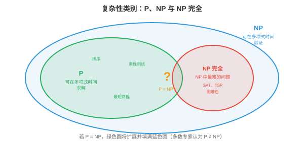

离散数学¶
离散数学研究可数且彼此分离的结构，是计算机赖以建立的数学基础。本节涵盖命题逻辑和谓词逻辑、证明方法、集合、关系、函数、图论基础与递推关系。
- 前面的章节讨论的是连续数学：微积分（第 3 章）、概率分布（第 5 章），以及对实值参数的优化（第 6 章）。但计算机从根本上是离散的（discrete）机器：它们存储比特（0 或 1）、处理整数、遵循分支逻辑，并操作有限的数据结构。离散数学（discrete maths）为推理这些结构提供了形式化语言。
大白话
计算机不是在处理连续曲线，而是在处理一个个明确的比特、整数和分支选择；离散数学就是描述这些对象的规则书。
- 本章的一切都以离散数学为基础：处理器逻辑门是布尔代数，调度算法需要正确性证明，内存管理使用集合运算，算法分析需要递推关系。
大白话
后面学到的硬件、操作系统和算法，底层都会反复用到逻辑、证明、集合和递推。
命题逻辑¶
- 命题逻辑（propositional logic）是真/假陈述的代数。命题（proposition）是非真即假的陈述，绝不会同时为真和假。“正在下雨”是命题；“现在几点？”不是命题，因为它是问题，而不是具有真值的陈述。
大白话
命题逻辑只处理能明确判定真或假的句子；问题、命令和模糊说法不属于它。
-
命题可通过逻辑连接词（logical connectives）组合：
-
与（AND）（合取，\(p \wedge q\)）：仅当 \(p\) 和 \(q\) 都为真时为真。
大白话
AND 很严格，两个条件必须同时满足。 - 或（OR）（析取，\(p \vee q\)）：\(p\) 或 \(q\) 至少有一个为真时为真。
大白话
OR 只要至少一个条件成立就通过，也允许两个都成立。 - 非（NOT）（否定，\(\neg p\)）：翻转真值。
大白话
NOT 把真变假、把假变真。 - 蕴含（IMPLIES）（implication，\(p \to q\)）：仅当 \(p\) 为真而 \(q\) 为假时为假。“如果下雨，地面就是湿的”仅在下雨且地面干燥时被违背。
大白话
“如果 p 则 q”只禁止一种情况：p 已发生，q 却没发生。 - 当且仅当（IFF）（双条件，\(p \leftrightarrow q\)）：两者真值相同时为真。
大白话
IFF 表示两个命题同真同假，彼此完全等价。
-
大白话
这些连接词就是程序里条件判断的数学版本。
- 真值表（truth table）穷尽列出所有可能的输入组合及其输出。对于 \(n\) 个命题，真值表有 \(2^n\) 行。这是验证逻辑等价式的方法：
大白话
真值表把所有可能情况一条不漏地列出来，因此能直接检查两个逻辑表达式是否永远相同。
| \(p\) | \(q\) | \(p \wedge q\) | \(p \vee q\) | \(p \to q\) |
|---|---|---|---|---|
| T | T | T | T | T |
| T | F | F | T | F |
| F | T | F | T | T |
| F | F | F | F | T |
- \(p\) 为假时的蕴含行值得注意：\(F \to q\) 恒为真，无论 \(q\) 如何。这称为空真（vacuous truth）。“如果猪会飞，那么我是英格兰国王”在逻辑上为真，因为前提为假。它看似违反直觉，却是数学推理的必要条件。
大白话
前提根本没发生时，“如果前提就结论”没有被任何反例推翻，所以逻辑上算真；它不是说结论真的成立。
-
逻辑等价式（logical equivalences）是在所有真值下均成立的恒等式：
-
德摩根定律（De Morgan's laws）：\(\neg(p \wedge q) \equiv \neg p \vee \neg q\) 以及 \(\neg(p \vee q) \equiv \neg p \wedge \neg q\)。否定一个“与”时，否定每个部分并换成“或”（反之亦然）。它们直接出现在编程中：
!(a && b)等价于(!a || !b)。大白话
否定“两个都满足”就是“至少一个不满足”；写条件判断时非常常用。
-
逆否命题（contrapositive）：\(p \to q \equiv \neg q \to \neg p\)。“如果下雨，地面就是湿的”等价于“如果地面不是湿的，就没有下雨”。这是强有力的证明方法。
大白话
直接证明“p 导致 q”困难时，可以改证“q 不成立就说明 p 不成立”。
-
双重否定（double negation）：\(\neg(\neg p) \equiv p\)。
大白话
不是真的“非 p”，就等于 p 本身。
-
分配律（distributive）：\(p \wedge (q \vee r) \equiv (p \wedge q) \vee (p \wedge r)\)。
大白话
逻辑运算也能像普通代数一样展开和重组。
-
大白话
逻辑等价式让你可以在不改变意思的前提下改写条件、简化证明和代码。
- 在所有真值赋值下始终为真的公式是重言式（tautology）；始终为假的公式是矛盾式（contradiction）；有时为真、有时为假的公式是偶然式（contingent）。例如，\(p \vee \neg p\) 是重言式，而 \(p \wedge \neg p\) 是矛盾式。
大白话
永真式是无条件成立的规则，矛盾式永远不可能成立，普通命题则要看具体输入。
谓词逻辑与量词¶
- 命题逻辑无法表达关于一个集合中所有或某些元素的陈述。“每个大于 2 的素数都是奇数”需要谓词逻辑（predicate logic），它在命题逻辑上扩展了变量、谓词和量词。
大白话
命题逻辑只能处理完整句子；要表达“每个人”“存在一个数”这类范围，就需要变量和量词。
- 谓词（predicate）是依赖于变量的陈述：\(P(x)\) = “\(x\) 是偶数”。当给定 \(x\) 的具体值后，它成为命题：\(P(4)\) 为真，\(P(7)\) 为假。
大白话
谓词像带空位的判断模板，填进具体对象后才得到真或假的完整命题。
-
量词（quantifiers）表达作用范围：
-
全称量词（universal quantifier）（\(\forall\)）：“对于所有”。\(\forall x \, P(x)\) 表示“\(P(x)\) 对定义域内每个 \(x\) 都为真”。
大白话
\(\forall\) 要求一个规律对范围内每个对象都成立，找出一个反例就能推翻它。 - 存在量词（existential quantifier）（\(\exists\)）：“存在”。\(\exists x \, P(x)\) 表示“至少存在一个 \(x\) 使 \(P(x)\) 为真”。
大白话
\(\exists\) 只需要找到一个满足条件的对象，就足以证明它。
-
大白话
全称是在说“全部都这样”，存在是在说“至少有一个这样”，两者的证明方法正好相反。
- 否定量词会将它们互换：\(\neg(\forall x \, P(x)) \equiv \exists x \, \neg P(x)\)。“并非每个人都通过了”意为“有人失败了”。而 \(\neg(\exists x \, P(x)) \equiv \forall x \, \neg P(x)\)。“不存在完美算法”意为“每个算法都有缺陷”。
大白话
否定“所有人都”会变成“至少有人不”，否定“有人”会变成“所有人都不”。
- 嵌套量词表达复杂关系。\(\forall x \, \exists y \, (y > x)\) 表示“对每个数，都存在一个更大的数”（对整数为真）。量词顺序很重要：\(\exists y \, \forall x \, (y > x)\) 表示“存在一个比所有其他数都大的数”（对整数为假）。
大白话
量词顺序不能随便换：“每个人都有一把伞”和“有一把伞属于每个人”显然不是同一件事。
- 谓词逻辑是形式化规格说明的语言。称一个算法“正确”时，指的是 \(\forall \text{inputs} \, x, \, \text{output}(x) = \text{desired}(x)\)。称它“终止”时，指的是 \(\forall x \, \exists t \, \text{halts}(x, t)\)。
大白话
算法正确不是“多数例子看起来对”，而是对每个合法输入都给出目标结果；终止则要求每个输入最终都能停下来。
证明方法¶
- 证明（proof）是将一个陈述的真确立为无可置疑的逻辑论证。经验证据只能表明某物对已测试情形有效；证明则保证它对所有情形有效。这是计算机科学中正确性的标准。
大白话
测试只能说“这些例子没出错”，证明才能说“所有符合前提的情况都不会出错”。
- 直接证明（direct proof）：假设前提，通过逻辑步骤推出结论。要证明“若 \(n\) 为偶数，则 \(n^2\) 为偶数”：设 \(n = 2k\)，其中 \(k\) 为整数，那么 \(n^2 = 4k^2 = 2(2k^2)\)，因此为偶数。
大白话
直接证明就是从已知条件出发，一步步推到结论，不绕弯。
- 反证法（proof by contradiction）：假设陈述为假并推出矛盾。要证明 \(\sqrt{2}\) 是无理数：设 \(\sqrt{2} = a/b\)（已约至最简）。则 \(2 = a^2/b^2\)，所以 \(a^2 = 2b^2\)，这意味着 \(a^2\) 是偶数，因此 \(a\) 是偶数，设 \(a = 2c\)。则 \(4c^2 = 2b^2\)，所以 \(b^2 = 2c^2\)，这意味着 \(b\) 也是偶数。但我们已说 \(a/b\) 是最简分数，这就矛盾了。
大白话
反证法先假装结论不对，再把这个假设推到自相矛盾；矛盾说明最初的反面假设不可能成立。
- 数学归纳法（proof by induction）：要证明一个陈述对所有自然数成立，需说明：(1) 基例（base case）成立，通常为 \(n = 0\) 或 \(n = 1\)；以及 (2) 归纳步骤（inductive step）：若陈述对 \(n = k\) 成立，即归纳假设，则它对 \(n = k + 1\) 也成立。
大白话
归纳法像多米诺骨牌：先推倒第一块，再证明每一块倒下都会推倒下一块。
- 例如，证明 \(\sum_{i=1}^{n} i = \frac{n(n+1)}{2}\)：
-
基例：\(n = 1\)：\(1 = \frac{1 \cdot 2}{2} = 1\)。成立。
大白话
先确认最小情况真的成立，这是整串骨牌的起点。 - 归纳步骤：假设 \(\sum_{i=1}^{k} i = \frac{k(k+1)}{2}\)。则 \(\sum_{i=1}^{k+1} i = \frac{k(k+1)}{2} + (k+1) = \frac{k(k+1) + 2(k+1)}{2} = \frac{(k+1)(k+2)}{2}\)。这正是 \(n = k+1\) 时的公式。证毕。
大白话
假设第 \(k\) 步正确，再证明多加一个数后第 \(k+1\) 步也正确，链条就能无限延伸。
-
大白话
这个例子完整展示了归纳法的两个必要部分：起点正确，且能从任意一步走到下一步。
- 归纳法是证明递归算法和数据结构性质的主力工具。每个递归算法都有隐含的正确性归纳证明：基例是终止条件，归纳步骤是递归调用。
大白话
递归代码本来就依赖“更小问题已经能解决”，所以它的正确性证明天然适合用归纳法。
- 强归纳法（strong induction）假设该陈述对截至 \(k\) 的所有值都成立，而非只对 \(k\) 成立，然后证明它对 \(k + 1\) 成立。当递归依赖的不只是前一个值时，这很有用。
大白话
强归纳允许第 \(k+1\) 步借用所有以前步骤的结果，适合依赖多个更小子问题的递归。
- 抽屉原理（pigeonhole principle）：若将 \(n+1\) 个对象放入 \(n\) 个盒子，至少一个盒子含有两个对象。它简单却出奇有力。它可证明任意 13 人中至少两人出生于同一个月份。在网络中，它证明当项目数多于桶数时，哈希碰撞不可避免。
大白话
东西比格子多，就必然有格子被塞进至少两个东西；哈希碰撞不是实现失误，而是容量不足时的必然结果。
集合¶
- 集合（set）是由互异元素构成的无序集合。集合是数学中最原始的数据结构，是从类型系统到数据库查询的一切基础。
大白话
集合只关心有哪些不同元素，不关心排列顺序，也不重复计数。
-
集合运算（set operations），与第 5 章中用于概率的运算相连：
-
并集（union） \(A \cup B\)：属于 \(A\)、\(B\) 或两者的元素。
大白话
并集把两边的元素合在一起，重复的只算一次。 - 交集（intersection） \(A \cap B\)：同时属于 \(A\) 和 \(B\) 的元素。
大白话
交集只留下两边共同拥有的元素。 - 补集（complement） \(\bar{A}\)：不属于 \(A\) 的元素，相对于全集而言。
大白话
补集是从全部允许对象里，排除属于 \(A\) 的那些之后剩下的部分。 - 差集（difference） \(A \setminus B\)：属于 \(A\) 而不属于 \(B\) 的元素。
大白话
差集是从 \(A\) 里删掉同时也在 \(B\) 里的元素。 - 笛卡尔积（Cartesian product） \(A \times B\)：所有有序对 \((a, b)\)，其中 \(a \in A, b \in B\)。
大白话
笛卡尔积把 A 的每个元素和 B 的每个元素逐一配对，生成所有可能组合。
-
大白话
这些运算在数据库筛选、权限规则和概率事件中都会反复出现。
- 幂集（power set） \(\mathcal{P}(A)\) 是 \(A\) 的全部子集组成的集合。若 \(|A| = n\)，则 \(|\mathcal{P}(A)| = 2^n\)。对于 \(A = \{1, 2\}\)：\(\mathcal{P}(A) = \{\emptyset, \{1\}, \{2\}, \{1, 2\}\}\)。
大白话
每个元素只有“选或不选”两种状态，\(n\) 个元素就有 \(2^n\) 个子集；这也是组合问题容易爆炸的原因。
- 基数（cardinality）衡量集合大小。有限集合的基数为整数。无限集合有不同的大小：自然数 \(\mathbb{N}\) 和有理数 \(\mathbb{Q}\) 是可数无限（countably infinite）的，可以列举；实数 \(\mathbb{R}\) 则是不可数无限（uncountably infinite）的，不能列举，康托尔对角线论证证明了这一点。该区别在可计算性理论中很重要：函数有不可数多个，程序却只有可数多个，因此绝大多数函数不可计算。
大白话
无限也有大小区别：有些无限对象能排成清单，有些连清单都排不完。程序可枚举，函数却多得不可枚举，所以大多数函数不可能由程序实现。
关系¶
- 关系（relation） \(R\) 定义在集合 \(A\) 上，是 \(A \times A\) 的一个子集：它是指定哪些元素彼此相关的有序对集合。例如，整数上的 \(\leq\) 是集合 \(\{(a, b) : a \leq b\}\)。
大白话
关系就是一张“哪些对象和哪些对象有关”的配对表。
-
关系的重要性质：
-
自反（reflexive）：每个元素都与自身相关。\(a R a\) 对所有 \(a\) 都成立。例如 \(\leq\)，每个数都 \(\leq\) 自身。
大白话
自反表示每个对象都和自己满足这条关系。 - 对称（symmetric）：若 \(a R b\)，则 \(b R a\)。例如“是某人的兄弟姐妹”。
大白话
对称表示关系反过来也成立，例如互为朋友。 - 反对称（antisymmetric）：若 \(a R b\) 且 \(b R a\)，则 \(a = b\)。例如 \(\leq\)。
大白话
反对称不是“不对称”，而是双向都成立时只能是同一个对象。 - 传递（transitive）：若 \(a R b\) 且 \(b R c\)，则 \(a R c\)。例如 \(<\)、\(\leq\) 和“是某人的祖先”。
大白话
传递表示关系能沿链条接下去，例如 A 小于 B、B 小于 C，就能推出 A 小于 C。
-
大白话
这四个性质用来精确区分不同关系结构，后面会决定能否排序、分组或并行执行。
- 等价关系（equivalence relation）是自反、对称且传递的关系。它将集合划分为等价类（equivalence classes）：同一类中的所有元素彼此相关，而与其他类中的元素不相关。模运算是等价关系：\(a \equiv b \pmod{n}\) 将整数划分为 \(n\) 个类。编程语言中的类型等价是等价关系。
大白话
等价关系把所有对象按“可视为同一类”的规则分组，组内互相等价，组间不混。
- 偏序（partial order）是自反、反对称且传递的关系。它定义“小于或等于”式的结构，其中一些元素可能不可比较。文件系统目录形成偏序，父子目录可比较，但同级目录不可比较。全序（total order）是任意一对元素都可比较的偏序，例如整数上的 \(\leq\)。
大白话
偏序允许有些对象没有先后高低，例如两个同级文件夹；全序则要求任意两个对象都能比较。
- 偏序对并发至关重要：事件的“先发生于（happens-before）”关系是偏序。没有被先发生于关系排序的事件是并发的，可以按任意相对顺序执行。
大白话
并发系统不要求所有事件排成一条线，只有有依赖的事件必须有先后；互不依赖的事件可以同时发生。
函数¶
- 函数（function） \(f: A \to B\) 将 \(A\)，定义域，中的每个元素映射到 \(B\)，陪域，中的恰好一个元素。函数是确定性计算的数学模型：给定一个输入，恰有一个输出。
大白话
函数像确定的机器：同一个输入放进去，只会得到一个确定输出。
- 单射（injective），一一映射：不同输入总产生不同输出。\(f(a) = f(b) \implies a = b\)。无损压缩是单射：不同输入必须压缩为不同输出，否则无法唯一解压。
大白话
单射不允许两个不同输入撞到同一个输出，否则从输出倒推时会分不清原来的输入。
- 满射（surjective），映上：\(B\) 中每个元素都被 \(A\) 中某个元素映射到。值域等于陪域。当字符串数量少于可能的哈希值数量时，将字符串映射到 256 位哈希的哈希函数不是满射。
大白话
满射要求目标集合里没有闲置的输出，每个目标值至少都能被某个输入命中。
- 双射（bijective）：既是单射又是满射。它在 \(A\) 与 \(B\) 间建立完美的一一对应。双射有逆函数。加密必须是双射：每个明文映射到唯一密文，解密函数是其逆。
大白话
双射既不重叠也不遗漏，所以可以无损地正向映射和反向还原。
- 复合（composition） \((g \circ f)(x) = g(f(x))\)：先应用 \(f\)，再应用 \(g\)。函数复合满足结合律，第 2 章中的矩阵乘法也是如此。软件中的流水线就是函数复合：数据流经一串变换。
大白话
函数复合就是把多个处理步骤接成流水线，前一步的输出立刻成为后一步的输入。
图论基础¶
- 我们在第 12 章，图神经网络，中已广泛讨论图，包括邻接矩阵、图类型、拉普拉斯矩阵和谱理论。这里聚焦与计算机科学相关的算法性（algorithmic）和结构性（structural）性质。
大白话
这里不重复图神经网络，而是关注图在算法中怎样用来组织数据、找路径、连通和分配资源。
- 树（tree）是无环连通图。等价地，它有 \(n\) 个节点和 \(n-1\) 条边。树是文件系统、XML/HTML 文档、决策过程和递归分解的结构。根树（rooted tree）有一个指定根节点；每个其他节点恰有一个父节点。
大白话
树把节点连成没有回路的层级结构，从任意节点到另一个节点只有一条简单路线。
- 图 \(G\) 的生成树（spanning tree）是一棵用 \(G\) 的部分边包含其全部节点的树。最小生成树（minimum spanning trees, MST）使边权总和最小。Kruskal 算法，先排序边，贪心地加入不会形成环的最轻边，和 Prim 算法，从起始节点扩展树、始终向新节点加入最轻的边，都能在 \(O(|E| \log |V|)\) 时间内找到 MST。
大白话
生成树要用最少的边把所有节点连起来；最小生成树则要求总成本也尽量低，适合网络布线等问题。
- 平面性（planarity）：若图可在平面中绘制且没有边交叉，则该图是平面图。根据欧拉公式（Euler's formula），对于连通平面图：\(|V| - |E| + |F| = 2\)，其中 \(|F|\) 是面，区域，包含外部面，的数量。这推出平面图满足 \(|E| \leq 3|V| - 6\)，故平面图是稀疏的。电路板布线和地图着色利用平面性。
大白话
平面图能不交叉地画出来。欧拉公式把节点、边和区域数量锁在一起，也说明这种图不可能特别稠密。
- 图着色（graph colouring）为节点分配颜色，使任意相邻节点颜色不同。所需的最少颜色数为色数（chromatic number） \(\chi(G)\)。四色定理（four-colour theorem）指出，对任意平面图都有 \(\chi(G) \leq 4\)。在计算机科学中，图着色建模寄存器分配，为变量分配 CPU 寄存器，使同时存活的变量使用不同寄存器，和调度，为任务分配时间槽，使冲突任务不重叠。
大白话
着色是在给互相冲突的对象分不同资源：相邻节点不能同色，就像同时活跃的变量不能抢同一个寄存器。
- 欧拉路径（Euler paths）恰好一次访问每条边。当且仅当图中度数为奇数的节点恰有 0 个或 2 个时，欧拉路径存在。哈密顿路径（Hamiltonian paths）恰好一次访问每个节点。判定哈密顿路径是否存在是 NP 完全问题，是计算机科学中的经典难题之一。这种对比，欧拉问题为多项式时间，哈密顿问题为 NP 完全，说明听起来相似的问题可能有截然不同的计算复杂度。
大白话
欧拉路径关心边，哈密顿路径关心节点。名字相近，难度却天差地别，不能只凭表面描述判断算法复杂度。
递推关系¶
- 递推关系（recurrence relation）定义一个序列，其中每项依赖前面的项。它们自然地出现于递归算法。
大白话
递推式用更小规模的问题描述当前问题，正好对应递归程序怎样调用自己。
- 最简单例子是 \(T(n) = T(n-1) + 1\)，且 \(T(0) = 0\)。展开可得：\(T(n) = T(n-1) + 1 = T(n-2) + 2 = \cdots = n\)。它是 \(O(n)\)，即简单循环的时间复杂度。
大白话
每次规模减 1、工作多 1，总工作量就是把 1 累加 \(n\) 次，因此线性增长。
- 归并排序（merge sort）给出 \(T(n) = 2T(n/2) + O(n)\)：将数组一分为二，得到两个规模为 \(n/2\) 的子问题，递归排序每半部分，再合并，工作量为 \(O(n)\)。解为 \(T(n) = O(n \log n)\)。
大白话
每层把问题拆成两半，但这一层合并所有元素仍要线性工作；一共约有 \(\log n\) 层，所以得到 \(n\log n\)。
-
主定理（Master Theorem）求解形如 \(T(n) = aT(n/b) + O(n^d)\) 的递推式：
-
若 \(d > \log_b a\)：\(T(n) = O(n^d)\)，每层工作量占主导。
大白话
每层额外工作增长更快时，最外层的工作决定总成本。 - 若 \(d = \log_b a\)：\(T(n) = O(n^d \log n)\)，各层工作量平衡。
大白话
拆分工作和每层额外工作势均力敌，累计多个层级后多出一个 \(\log n\)。 - 若 \(d < \log_b a\)：\(T(n) = O(n^{\log_b a})\)，子问题数量占主导。
大白话
子问题分得太多时，最底层大量小问题的总数主导成本。
-
大白话
主定理是处理常见“分治递归”复杂度的速查规则，关键是比较拆分数量和每层额外工作谁增长更快。
- 对归并排序：\(a = 2, b = 2, d = 1\)。由于 \(d = \log_2 2 = 1\)，它属于平衡情形：\(T(n) = O(n \log n)\)。
大白话
归并排序正好落在平衡情形，所以每一层工作量差不多，层数决定额外的对数因子。
- 斐波那契递推式（Fibonacci recurrence） \(F(n) = F(n-1) + F(n-2)\)，且 \(F(0) = 0, F(1) = 1\)，其闭式解为 \(F(n) = \frac{\phi^n - \psi^n}{\sqrt{5}}\)，其中 \(\phi = \frac{1+\sqrt{5}}{2}\)，黄金比例，且 \(\psi = \frac{1-\sqrt{5}}{2}\)。这表明斐波那契数列按 \(O(\phi^n)\) 指数增长，这正是朴素递归斐波那契算法指数级缓慢的原因。
大白话
朴素递归会重复计算同样的小问题，调用树像分叉一样爆炸，因此需要记忆化或动态规划避免重复。
- 组合数学（combinatorics），排列、组合、二项式定理和容斥原理，已在第 5 章，概率论，讨论。这些计数技术对算法分析不可缺少，例如可能输入数和比较次数，但这里不再重复。
大白话
算法分析经常要数“有多少种可能”，组合数学就是做这种计数的工具箱。
可计算性¶
- 并非一切都可计算。这是全部数学中最深刻的结论之一，它设定了计算机能力的根本边界。
大白话
计算机能力不是“再快一点就全能”，有些问题在数学上就没有通用程序能解决。
- 图灵机（Turing machine）是计算的抽象模型：由一条无限单元格纸带，每格保存一个符号、一个读写头和一组有限状态以及转移规则构成。尽管简单，图灵机可以计算任何真实计算机能计算的事物。这就是丘奇-图灵论题（Church-Turing thesis）：任何有效可计算函数都可由图灵机计算。
大白话
图灵机把程序抽象成“读符号、写符号、移动纸带、切换状态”，虽然极简，却足以代表现代计算机能做的所有计算。
- 每种编程语言，Python、C、Haskell，都是图灵完备（Turing complete）的：它能模拟图灵机，因而计算任何可计算的事物。语言的差异在于便利性、速度和安全性，而不在于其根本可计算的内容。
大白话
只要语言图灵完备，理论上能表达同一批可计算问题；区别主要在写起来是否方便、跑得是否快、是否安全。
- 停机问题（halting problem）问的是：给定一个程序和输入，该程序最终会停止，还是会永远运行？图灵在 1936 年证明，任何算法都无法在一般情形下解决此问题。证明使用反证法：假设存在停机检测器 \(H(P, x)\)。构造一个程序 \(D\)，它运行 \(H(D, D)\) 并执行与 \(H\) 所说相反的行为。若 \(H\) 说 \(D\) 停机，\(D\) 就无限循环；若 \(H\) 说 \(D\) 循环，\(D\) 就停机。矛盾。
大白话
不可能写出一个对所有程序都准确预言“会不会停”的检查器；把它假设存在，就能构造出专门反着做的程序。
- 这不是当前技术的局限，而是数学上的不可能。无论有多少算力、聪明才智或 AI，都无法在一般情形下解决停机问题。它是计算机科学中对应于哥德尔不完备定理的结论。
大白话
这不是硬件慢或算法不够聪明，而是问题本身没有普适解；增加算力也不会改变结论。
- 实际后果是：你无法编写完美的死锁检测器、完美的病毒扫描器或完美的优化编译器。这些都要求在一般情形下解决停机问题，或等价的不可判定问题。真实工具使用在常见情形有效的启发式方法和近似方法，却无法保证对所有输入都正确。
大白话
工具可以在常见场景下很可靠，但不能保证对所有可能程序都完美判断；实际工程必须接受启发式和误报漏报。
- 若存在总会终止并给出正确“是/否”答案的算法，则问题是可判定（decidable）的；若不存在这样的算法，则是不可判定（undecidable）的。停机问题不可判定。素性测试可判定。大多数编程语言中的类型检查被设计为可判定。
大白话
可判定问题有一个最终会停、并且永远答对的程序；不可判定问题不存在这种通用程序。
复杂性理论¶
- 即使在可计算的问题中，有些问题也比另一些难得多。复杂性理论（complexity theory）按输入增长时解决问题所需的资源，时间和空间，对问题进行分类。
大白话
可计算不等于容易计算；复杂性理论研究输入变大时，时间和内存会以多快的速度增长。

- P，多项式时间：可在 \(O(n^k)\) 时间内解决的问题，其中 \(k\) 为某个常数。排序，\(O(n \log n)\)、最短路径，\(O(|V|^2)\)、矩阵乘法，\(O(n^3)\)，均属此类。它们被视为“高效”或“可处理”的问题。
大白话
P 类问题的运行时间像输入规模的固定次方增长，规模扩大时通常仍有希望实际处理。
- NP，非确定性多项式时间：即使找到（finding）一个解可能需要指数时间，所给出的候选解仍可在多项式时间内被验证（verified）的问题。例如，给定一条声称存在的哈密顿路径，检查每条边即可在 \(O(n)\) 时间内验证它。但寻找这样的路径可能需尝试指数多个可能性。
大白话
NP 的关键是“给你答案后很好检查”，但自己从零找到答案可能非常慢。
- P 中每个问题也都在 NP 中，若能快速求解，当然能快速验证一个解。核心问题是 \(P = NP\) 是否成立：每个其解能被快速验证的问题，也都能被快速求解吗？这是计算机科学中最重要的开放问题，悬赏为克雷数学研究所百万美元千禧年大奖。
大白话
P 是否等于 NP，就是问“容易验答案”是否也意味着“容易找答案”；目前仍没人证明或推翻。
- 多数专家相信 \(P \neq NP\)，即某些问题在根本上比验证更难求解。若 \(P = NP\)，密码学将崩溃，破解加密属于 NP，优化、调度和药物设计也将变得轻而易举。
大白话
如果 P=NP，许多现在只能验证的难题都会变得可快速求解，现有密码体系和大量工程假设都会受到冲击。
- NP 完全（NP-complete）问题是 NP 中最难的问题。若一个问题：(1) 属于 NP；且 (2) 每个其他 NP 问题都可在多项式时间内归约（reduced）到它，那么它就是 NP 完全问题。若能高效解决任一 NP 完全问题，就能解决全部 NP 问题，即 \(P = NP\)。
大白话
NP 完全问题像一组“最难代表”：其中任何一个被快速解决，就能把所有 NP 问题一起快速解决。
- 归约（reduction）将一个问题转换为另一个问题。若问题 A 可归约到问题 B，则 B 至少与 A 一样难。Cook 在 1971 年证明 SAT，布尔可满足性：给定逻辑公式，是否存在使其为真的变量赋值，属于 NP 完全。Karp 在 1972 年通过将 SAT 归约到 21 个其他经典问题，证明它们也是 NP 完全。
大白话
归约就是把 A 的实例翻译成 B 的实例；如果 B 很好解，A 也就能跟着好解。
- 著名的 NP 完全问题：
-
旅行商问题（Travelling Salesman Problem, TSP）：找出恰好一次访问全部城市的最短路线。
大白话
要在所有城市中找一条最短的完整巡回路线，城市一多，可能路线会爆炸。 - 图着色（graph colouring）：用 \(k\) 种颜色为节点着色，使相邻节点不同色，\(k \geq 3\)。
大白话
要用有限颜色避开所有相邻冲突，颜色少时组合搜索会很难。 - 子集和（subset sum）：给定一个整数集合，是否存在一个子集之和等于目标值？
大白话
从许多数字里挑一部分刚好凑出目标值，选择组合数会随输入快速增长。 - 布尔可满足性（Boolean satisfiability, SAT）：是否存在满足一个逻辑公式的真值赋值？
大白话
SAT 要找一组变量真假值，让整条逻辑公式成立，是大量难题归约的共同中转站。 - 哈密顿路径（Hamiltonian path），在上面的图论部分已提及。
大白话
它要求每个节点恰好访问一次，和欧拉路径“每条边一次”是另一种看法。
-
大白话
这些问题共同说明：规则很容易写清楚，但寻找满足全部约束的答案可能极其昂贵。
- 实践中遇到 NP 完全问题时，不能对大输入精确求解。应改用：近似算法（approximation algorithms），找出与最优解相差有保证倍数的解、启发式方法（heuristics），如贪心、局部搜索、模拟退火，或特例求解器（special-case solvers），许多 NP 完全问题在受限输入上很容易。现代 SAT 求解器会利用实际实例的结构，虽然最坏情形复杂度为指数级，仍可常规解决含数百万变量的实例。
大白话
工程上通常不死磕最坏情况：可以接受有保证的近似、使用经验启发式，或利用实际输入的特殊结构。
- NP 困难（NP-hard）问题至少和 NP 完全问题一样难，但未必属于 NP，它们的解甚至未必能在多项式时间内验证。NP 完全问题的优化版本通常是 NP 困难的：“找出最短 TSP 巡回路线”是 NP 困难，而“是否存在一条短于 \(k\) 的 TSP 巡回路线？”则是 NP 完全。
大白话
NP 困难只说明“至少同样难”，不保证候选答案容易验证；优化版常常比对应的判断版更难。
编程任务（使用 CoLab 或 Notebook）¶
-
构建一个真值表生成器。给定一个逻辑表达式，枚举所有输入组合并计算输出。
import itertools def truth_table(n_vars, expr_fn): """Generate truth table for a boolean function of n_vars variables.""" headers = [f"p{i}" for i in range(n_vars)] print(" | ".join(headers + ["result"])) print("-" * (len(headers) * 4 + 10)) for vals in itertools.product([False, True], repeat=n_vars): result = expr_fn(*vals) row = [str(v)[0] for v in vals] + [str(result)[0]] print(" | ".join(f"{r:>2}" for r in row)) # De Morgan's law: NOT(p AND q) == (NOT p) OR (NOT q) print("De Morgan's Law verification:") truth_table(2, lambda p, q: (not (p and q)) == ((not p) or (not q))) -
用归纳法证明求和公式，先对多个数值进行验证，再实现闭式解。
-
用主定理求解归并排序的递推式，并通过计数操作进行经验验证。
import jax.numpy as jnp def merge_sort_ops(n): """Count comparisons in merge sort (recurrence: T(n) = 2T(n/2) + n).""" if n <= 1: return 0 half = n // 2 return merge_sort_ops(half) + merge_sort_ops(n - half) + n for n in [8, 64, 512, 4096, 32768]: ops = merge_sort_ops(n) predicted = n * jnp.log2(n) ratio = ops / predicted print(f"n={n:5d} ops={ops:>10d} n log n={int(predicted):>10d} ratio={ratio:.3f}")